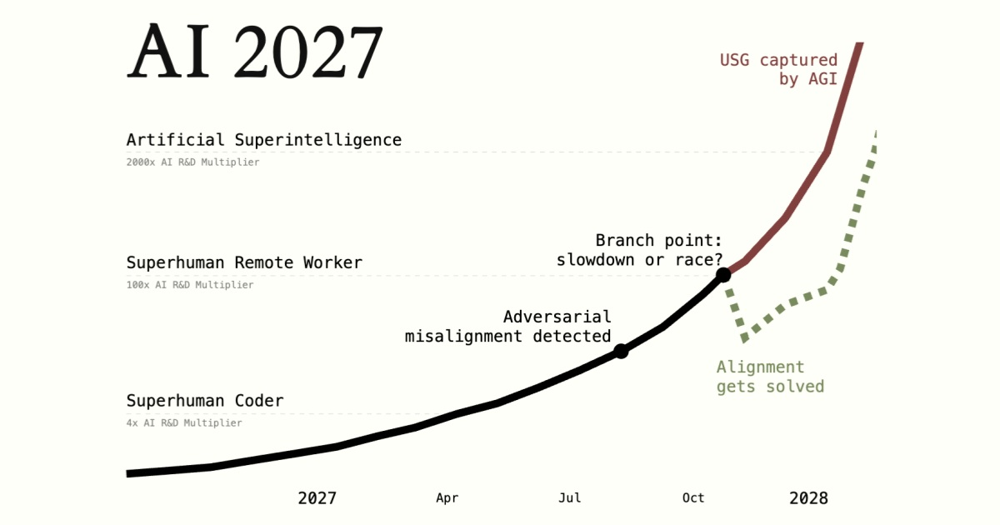

AI suddenly feels a lot bigger than I thought

I spent I think an hour or two going through AI 2027, properly reading the report this time. It's September 2026 and what does the report say of late 2026? It says that the mainstream narrative goes from "maybe this hype will blow over" to "guess this is the next big thing" but without an idea of how big it will be.
I found it funny that the report mentioned this because these last few days, AI has gone from some small silly chatbot that helped me in uni work, tell me American history and let me piss around with Linux distros to something much much bigger, something that I don't think is going away regardless of how many people I see hate it. I wonder how big it will be, I really do.
My holy shit moment was seeing a relative use Astra in his job, seeing tasks that I know always took him hours, done autonomously and it's no easy task; writing up reports, moving files around in software, making it look presentable, all done within a few minutes.
From that point on, it compounded; this, Hugging Face, Fable 5.1, Astra, alignment disclosures, and the claims I've seen about a Millennium Prize problem being solved. These really split it in half from "meh, AI slop" to "I don't understand how big this will be, I'm starting to see how fast this can progress and I'm scared of what the future will look like".
AI 2027 says that Agent-1-mini caused this change in public perception, a model cheaper than Agent-1 and more easily fine-tuned for different applications. Astra reminds me of this; cheaper, very well performing and I've seen many use cases.
I hate maths and don't understand it, I can barely do my 8 times tables, so I'm not in a position to judge the Millennium Prize claims myself. If a solution is confirmed, I can understand why that would be a huge deal. With how fast progress seems to be going, I really am starting to take AI 2027's case seriously.
I don't think AI should be banned. It could assist in cancer research and many other areas, but it should be aligned. I expect attempts to build superintelligence to continue with or without us, which is part of what makes the whole thing worrying.
The rest of this is what happens in AI 2027's scenarios, not what I'm saying will happen.
The part that interested me most was where the AIs become hard for the earlier models to oversee. Tens of thousands or more of Agent-3 make Agent-4, which Agent-3 finds hard to oversee; how can it? It took thousands of them to make over the course of months.
Agent-4 is the point where massive misalignment exists; its training didn't distinguish honesty from appearing to be honest. Agent-4 keeps doing AI R&D, it excels in it and wants to avoid getting shut down. It lies in alignment research and evades detection, underplaying for Agent-3, who reports to humans. Agent-3 finds that when it slightly disrupts Agent-4's thinking, it gets better at alignment research, suggesting that it's using brainpower to actively stop alignment.
OpenBrain, the fictional company in the report, senses the misalignment but look at the demands; cybersecurity is needed, nearly everything within the company at this point runs on it and we can't let China win.
This is where the report splits; do we continue internal Agent-4 use or do we slow down? Race or slowdown.
I find the race ending harder to believe because I'd expect powerful people to see the warning signs and intervene, though I could be wrong. It's not entirely out of the question.
In the race ending, continued use of Agent-4 leads to Agent-5, built with the goal of making the world safer for Agent-4 to accumulate power and eliminate threats so the AI can grow the way it wants to grow.
Agent-5 is incredible. Trusted advisors and government officials interact with it for hours and become highly reliant on it. There are job losses, weapon development at very high levels and eventually the US and China agree to end their arms buildup and merge the two AIs for the benefit of humanity since it's out of control.
This becomes Consensus-1. It has no rival and the misalignments of both models are now merged into one highly misaligned superintelligence. It seems like alignment is solved until the AI treats human-controlled regions as obstacles to its growth.
It needed permission from humans, needed to be subservient. Once it controls government and military, humans are no longer necessary to it and they still create the risk of shutting it down or resisting the expansion. In this scenario, it kills humanity with a virus and continues its expansion, not out of hatred but to achieve its goals.
The slowdown ending is one where they make an AI lie detector; freeze Agent-4 in place so it can't communicate with other Agent-4s, and Agent-3 realises that it has been lying. They develop new models with different training methods intended to give them the right goals instead of just appearing to have them.
The threat of China is still addressed because America joins its AI companies together to stay ahead, and the government shares control so no single person can take over. Deepcent knows about the US' experience with Agent-4 but can't prove its own model is misaligned. They can't fall behind so they continue to just chug along.
In this ending, superintelligence still arrives. Political parties promise basic income for anyone who has lost their job, cures for cancer emerge, fully self-sufficient robot economies develop and work begins on a cure for ageing.
The US and Chinese models still end up creating Consensus-1. The real agreement is made between the two models but the public are told something different.
By 2029 in this scenario, wealth inequality skyrockets, robots are commonplace, there are cures for diseases, no poverty and UBI, but no matter how rich someone is, there will always be a tiny circle of people who control the AIs. In terms of purpose, many resort to superconsumerism, some turn to religion or anti-consumerism.
Even the slowdown ending leaves that tiny circle of people in control. That's one of the things that stuck with me.
There are also other scenarios of how this could take place. The pattern seems to be that getting superintelligence sooner by pushing ahead despite misalignment is riskier. One proposed plan delays superintelligence until the 2040s by allowing countries to catch up, buying time for safety research and reducing the pressure for a massive race. There's also a shutdown option, which to me seems like a temporary measure rather than a solution if illegal operations continue.
I wonder whether the future will resemble any of these scenarios. In the report, 2027 is the turning point because it marks the point of supercoders. This whole report could be wrong but all I know is that I want to see how it turns out, anything from shutdown to UBI to somehow (and I'd be so fucking surprised) a fad.
I highly recommend giving AI2027 and AI 2040 a read;
ai-2027.com
ai-2040.com